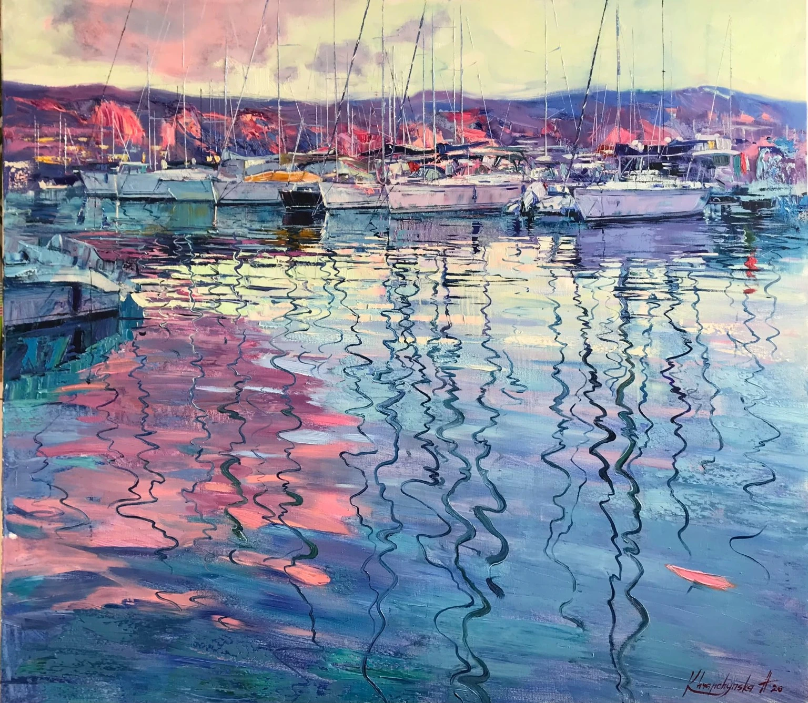
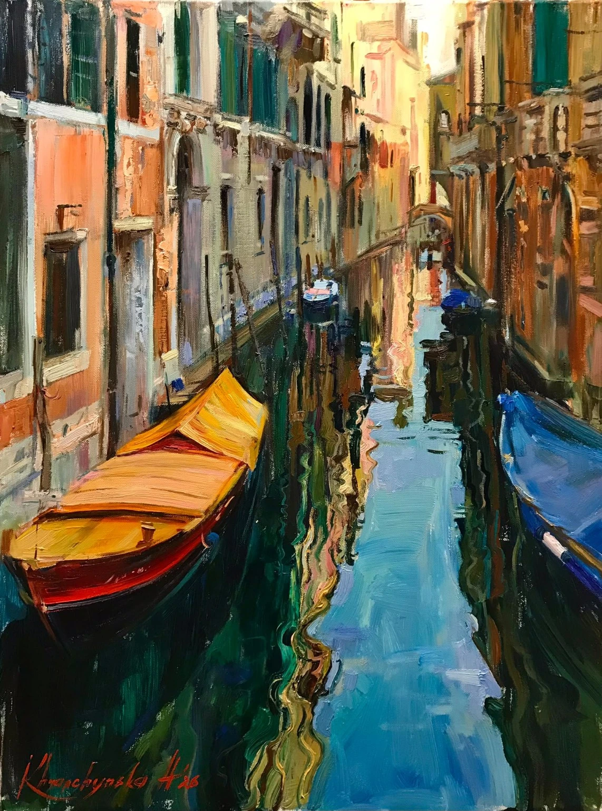
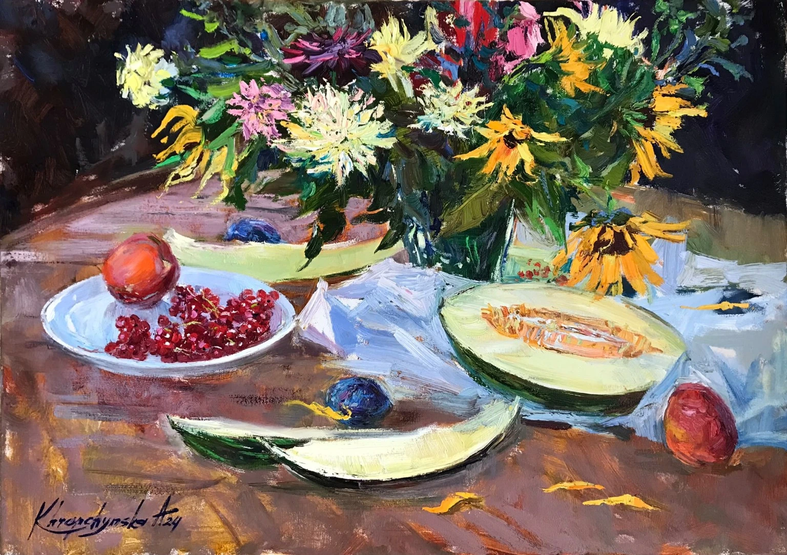

Eine Welt voller Licht und Farbe
Zwischen Licht, Wasser und lebendiger Farbe entstehen Gemälde, die Erinnerungen bewahren und Emotionen sichtbar machen.



Die Kollektion
Originale in Öl auf Leinwand
Über die Künstlerin
Kunst, die Augenblicke bewahrt und Emotionen sichtbar macht.
Alina Khrapchynska ist eine ukrainische Malerin, Grafikdesignerin und Kunstpädagogin. Geboren 1983 in Charkiw, entwickelte sie ihre künstlerische Handschrift durch eine fundierte Ausbildung und langjährige schöpferische Praxis.
2015 schloss sie ihr Masterstudium an der Nationalen Pädagogischen Universität Charkiw im Bereich Kunst und Grafik ab. Seit 2015 ist sie Mitglied des Nationalen Künstlerverbandes der Ukraine und seit 2023 Mitglied des BBK Köln.
Ihre Malerei verbindet gegenständliche Darstellung mit einer ausdrucksstarken, lebendigen Farb- und Bildsprache. Landschaften, Wasserlandschaften, Stillleben und menschliche Begegnungen gehören zu ihren wiederkehrenden Motiven.
Ihre Werke wurden international ausgestellt und befinden sich laut ihrem Kunstkatalog in privaten und öffentlichen Sammlungen in zahlreichen Ländern.
Der Kunstkritiker Oleg Koval beschreibt in seinem Vorwort zum Katalog Die Magie der Kunst die Verbindung von Realismus, Moderne und neobarocker Ausdruckskraft in Alina Khrapchynskas Werk. Er hebt insbesondere ihre Farbgestaltung, die Vielfalt ihrer Bildthemen und die poetische Dimension ihrer Malerei hervor.
Kontakt & Anfragen
Interessieren Sie sich für ein Gemälde? Schreiben Sie uns.
WhatsApp ↗E-Mail ↗